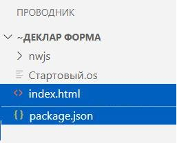

Назначение
Декларативные формы задумывались как десктопное приложение на базе веб-технологий, со всеми возможностями движка Chrome. Изначально требования к приложению ставились следующие:
Кнопка1 = ДФ.Кнопка(); Кнопка1.Родитель = Форма1; Кнопка1.Текст = "Кнопка"; Кнопка1.Нажатие = ДФ.Действие(ЭтотОбъект, "Кнопка1_Нажатие");
В первую очередь это инструмент в помощь разработчикам на языке 1С. Используются два движка - OneScript и NW.JS.
OneScript повторяет синтаксис 1С, поэтому тем, кто с ним знаком дополнительно ничего изучать не нужно.
NW.JS обеспечивает кроссплатформенность, так как может создать окно программы с браузером в этом окне. Его изучать не нужно, механизм его работы и взаимодействия со сценарием скрыт внутри библиотеки декларативных форм. NW.JS находится в активной разработке и часто выходят новые версии с обновленным движком Chromium. Вы сможете скачать NW.JS выбрав версию и платфому.
Требования к каталогу Вашей программы.
Минимальные требования к устройству каталога Вашей программы при первом запуске показаны на рисунке ниже.

Важно: в каталоге Классы должна лежать библиотека TCP сервера OneScriptClientServer.dll.
Без TCP сервера невозможна связь формы с нашим сценарием. Я использовал версию 3.0.1.0 и она будет в релизе декларативных форм на гитхабе.
Имя стартового сценария не регламентируется. В этой справке стартовый сценарий будет называться Главный.os.
Содержимое файла Главный.os следующее:
ПодключитьВнешнююКомпоненту("C:\444\111\DeclarativeForms\DeclarativeForms\bin\Debug\DeclarativeForms.dll");
ДФ = Новый ДекларативныеФормы();
ДФ.nwПуть = "C:\222\nwjs\nw.exe";
ДФ.oscriptПуть = "C:\Program Files\OneScript\bin\oscript.exe";
Форма1 = ДФ.Форма;
Форма1.Открыть();
Пути указаны с моего компьютера.
При запуске программа проверит наличие необходимых файлов и допишет их, с содержимым по умолчанию, в каталог. В итоге получится так:

Можно поместить движки OneScript и NW.JS в нашем каталоге и не указывать в сценарии пути до них. Программа по умолчанию будет искать их в каталогах oscript и nwjs. Код сценария сократится до:
ПодключитьВнешнююКомпоненту("C:\444\111\DeclarativeForms\DeclarativeForms\bin\Debug\DeclarativeForms.dll");
ДФ = Новый ДекларативныеФормы();
Форма1 = ДФ.Форма;
Форма1.Открыть();
И каталог программы будет такой:
Конструкторы экземпляров класса.
Создать элемент можно разными способами. Поддерживаются HTML тэги соответствующие элементу, но только для класса Элемент, так как он является базовым классом.
Кнопка1 = ДФ.Кнопка();
Кнопка2 = ДФ.Элемент("Кнопка");
Кнопка3 = ДФ.Элемент("button");
Абзац1 = ДФ.Элемент("p");
Диалог1 = ДФ.Элемент("dialog");
Подключение библиотеки и создание объекта ДекларативныеФормы.
Подключить библиотеку можно так:
ПодключитьВнешнююКомпоненту("ВашКаталогНаДиске\OneScriptDeclarativeForms.dll");
ДФ = Новый ДекларативныеФормы();
При создании объекта ДекларативныеФормы автоматически выполнится метод ДФ.ЗагрузитьСценарии(".\") и подключатся сценарии находящиеся в подкаталогах Классы и Модули. В подключенных сценариях будет доступна структура под именем ОбщаяСтруктура. И у ОбщаяСтруктура будет свойство с именем ДФ. Так что Вы можете в подключенном сценарии сразу обратиться к объекту ДекларативныеФормы так:
Сообщить("из сценария ОбщаяСтруктура.ДФ = " + ОбщаяСтруктура.ДФ);
Закрытие программы.
После запуска стартового сценария откроется окно консоли и затем окно программы. Взаимодействовать они будут через запущенный фоновым заданием TCP сервер. Запуск TCP сервера производится файлом startserver.os. Файл сервера server не должен иметь расширения. Корректное закрытие всех запущенных модулей - это закрытие окна программы. Это вызовет завершение работы и NW.JS и фонового TCP сервера и окна консоли.
Если закрыть только окно консоли это вызовет и завершение фонового TCP сервера, но окно программы останется открытым и может выдать сообщение о потере связи с сервером, после чего может автоматически закрыться. Возможно закрытия и не произойдет, зависит от кода программы. Следующий запуск стартового сценария будет успешным только после закрытия окна программы.
Избежать появление окна консоли совсем поможет разработка Запуск сценариев OneScript без окна консоли.
.